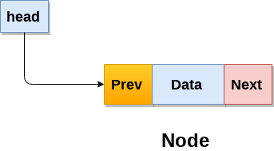

<!DOCTYPE html>
<html>

<head>
    <!-- Global site tag (gtag.js) - Google Analytics -->
    <script async src="https://www.googletagmanager.com/gtag/js?id=UA-142495931-1"></script>
    <script>
        window.dataLayer = window.dataLayer || [];
        function gtag() { dataLayer.push(arguments); }
        gtag('js', new Date());

        gtag('config', 'UA-142495931-1');
    </script>
    <link rel="stylesheet" href="../Css/index.css" />
    <script src="../Javascript/index.js"></script>
</head>

</html>

<body id="background">
    <div id="wrapper">
        <div id="navigation">
            <a href="../index.html">Home</a>
            <a href="about.html">About</a>
            <a id="active" href="projects.html">Projects</a>
            <a href="contact.html">Contact</a>
        </div>

        <div id="openbutton" onmouseover="hoverOn();" onmouseout="hoverOff();" onclick="navigationControl();">
            &#10753;
        </div>
        <div id="section">
            <a target="_blank" id="plink" href="https://github.com/Arc-N/Deep-Q-Learning-Car-2D">
                <h2 id="ptitle">2D Self Driving Car </h2>
            </a>
            <h3>Keras, Tensorflow, Numpy, Pygames</h3>
            
            <p id="pdesc">This project uses DeepQ learning, which is a type of trial and error deep learning method to
                predict optimal controls to beat a game or achieve a certain goal in a virtual environment.
                <br></br>Many data driven
                deep learning methods are limited due to the amount of required pre-labeled data that needs to be
                provided.
                Situations such as the self-driving cars often are impossible to be solved through data alone since the
                data
                on
                all possible ways a car can drive is massive.
                <br></br>Deep Q learning lifts such limitations, focusing on defining
                sets of rules through which the computer can explore a given problem on its own and collect data as well
                as
                learn from it with little to no human input. This is achieved through mimicking how humans learn
                (Reinforced
                learning) with how human brain works (Dense Neural Networks).</p>
        </div>
        <div id="section">
            <a target="_blank" id="plink" href="https://github.com/Arc-N/UnbeatableTicTacToe">
                <h2 id="ptitle">Tic Tac Toe Unbeatable AI</h2>
            </a>
            <h3>C++ STD</h3>
            
            <p id="pdesc">
                Welcome to the unbeatable tic tac toe.
                <br></br>
                This program uses an algorithm called minimax.
                <br></br>
                The computer essentially calls itself recursively and "plays" every possible move given the board
                arrangment.
                Each move is assigned a score based on the outcome and stored in a vector.
                After the recursion terminates the vector of moves is run through a loop to determine the best score and
                the index of that move is returned as the "goldenMove".
                This is done for every possible empty spot on the board to ensure the best overall move.
            </p>
        </div>
        <div id="section">
            <a target="_blank" id="plink" href="https://github.com/Arc-N/SFML-Fractal-Tree-OpenGL">
                <h2 id="ptitle">SFML Fractal Tree</h2>
            </a>
            <h3>C++ STD, OpenGL (backend)</h3>
            
            <p id="pdesc">This project uses SFML library (using openGL backend) to generate fractal lines through
                recursion that resemble a tree.
                <br></br>
                The program also allows the user to adjust key variables runtime and see changes taking place live.
                <br></br>
                Each recursive call adds more details to the tree, however the time it takes to render exponantially
                increases.
            </p>
        </div>
        <div id="section">
            <a target="_blank" id="plink" href="https://github.com/Arc-N/Search-Engine-ICS-121">
                <h2 id="ptitle">Search Engine</h2>
            </a>
            <h3>Python, HTTP, Tokenizer, Crawler</h3>
            
            <p id="pdesc">This project uses variety of python libraries to load in an html dump of ics.edu website,
                tokenize the words and clean up the html text.
                <br></br>
                After the cleanup, the program uses index.py to create an inverted index that loads the tokenized words
                into a hashtable and dumps it into a pickle file.
                <br></br>
                The Pickle file can then be loaded to be used for simple query searching.
            </p>
        </div>
        <div id="section">
            <a target="_blank" id="plink" href="https://github.com/Arc-N/DLL-Implementation">
                <h2 id="ptitle">My Take On Doubly Linked List Implementation</h2>
            </a>
            <h3>C++ STD</h3>
            
            <p id="pdesc">This project uses C++ standard library to create a full doubly linked list class from scartch.
                <br></br>
                The project also includes a simple program showcasing the freshly implemented doubly linked list as a
                shop line simulator using que and doubly linked list.
            </p>
        </div>
        <div id="section">
            <a target="_blank" id="plink" href="https://github.com/Arc-N/CS-116-Project">
                <h2 id="ptitle">Visual Computing projects</h2>
            </a>
            <h3>Python, Numpy, OpenCV, Gradients</h3>
            
            <p id="pdesc">This project uses variety of python libraries to load in images and RBG values and compute
                bayer's demosaicing formula, morphing, merging, projection and other photo processing techniques through
                vectorized matrix multiplication.
                <br></br>
                All projects are done in jupiter notebook
                <br></br>
                Projects heavily utilize numpy and its extremely fast vectorized matrix multiplication to achieve fast
                results.
            </p>
        </div>
    </div>
</body>